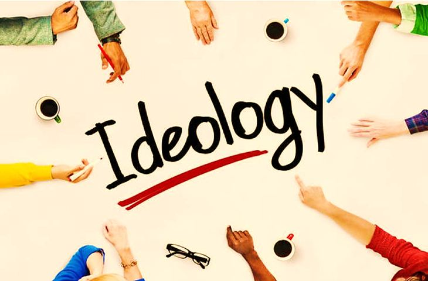
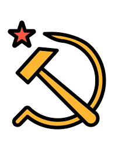

InSP Kelas 11

Selamat datang di pembelajaran Integrasi Sejarah dan PKN (InSP). Disini, kami akan menuliskan rangkuman dari materi Ideologi yang dijelaskan di kelas.
Ideologi
Pengertian
Ideologi adalah seperangkat keyakinan atau filosofi yang dikaitkan dengan seseorang atau sekelompok orang. Istilah ideologi berasal dari bahasa Prancis idéologie, yang berasal dari gabungan bahasa Yunani: idéā yang berarti "gagasan, pola" dan -logíā yang berarti "studi tentang, ilmu yang mempelajari".
Fungsi
- Peran Ideologi Umum. Di zaman sekarang ini, ideologi liberalisme dan komunisme telah menjadi dua ideologi umum utama yang memainkan peran penting dalam mempengaruhi perilaku negara dalam hubungan internasional. Ideologi-ideologi umum banyak digunakan untuk menutup-nutupi tujuan-tujuan kekuasaan suatu bangsa.
- Peran Ideologi Tertentu. Zaman kontemporer jelas mencerminkan peran yang dimainkan oleh beberapa ideologi tertentu dalam politik internasional seperti Ideologi Status Quo, Ideologi Imperialisme, dan Ideologi Ambigu. Ideologi Status Quo sendiri dapat digambarkan sebagai sesuatu yang bertahan adalah cenderung menentang setiap perubahan.
Jenis-Jenis Ideologi
- Kapitalisme. sistem ekonomi yang didasarkan pada kepemilikan pribadi atas alat-alat produksi dan operasinya untuk keuntungan. Ciri-ciri utama kapitalisme meliputi akumulasi modal, pasar kompetitif, sistem harga, kepemilikan pribadi dan pengakuan hak milik, pertukaran sukarela dan kerja upahan.
- Liberalisme. Liberalisme adalah filosofi politik dan moral yang didasarkan pada kebebasan, persetujuan dari yang diperintah dan persamaan di depan hukum. Liberalisme umumnya mendukung hak-hak individu termasuk hak-hak sipil dan hak asasi manusia, demokrasi, sekularisme, kebebasan berbicara, kebebasan pers, kebebasan beragama dan ekonomi pasar.
- Sosialisme. Sosialisme adalah sistem ekonomi dan politik kerakyatan yang didasarkan pada kepemilikan publik. Sosialisme juga dikenal sebagai kepemilikan kolektif atau bersama atas alat-alat produksi. Dalam sistem sosialis murni, semua keputusan produksi dan distribusi yang sah dibuat oleh pemerintah, dan individu bergantung pada negara untuk segala hal mulai dari makanan hingga perawatan kesehatan.
- Feminisme. Feminisme adalah sebuah ideologi tentang mengubah cara orang melihat hak laki-laki dan perempuan (terutama perempuan), dan mengkampanyekan kesetaraan gender. Feminisme dimulai dengan gagasan bahwa hak asasi manusia harus diberikan kepada perempuan. Ide ini dikemukakan oleh beberapa filosof pada abad ke-18 dan 19 seperti Mary Wollstonecraft dan John Stuart Mill.
